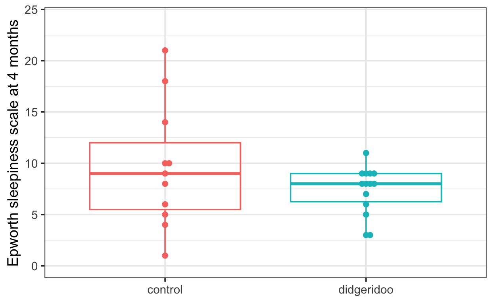
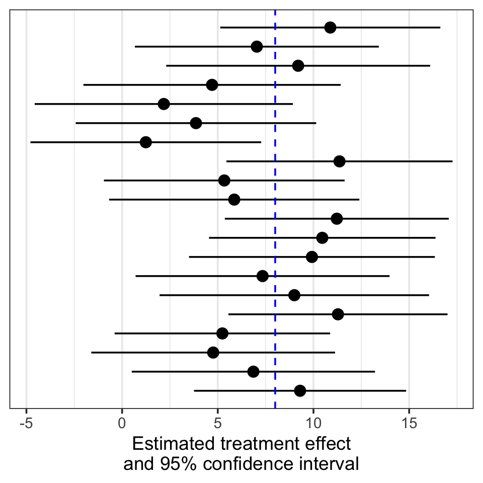
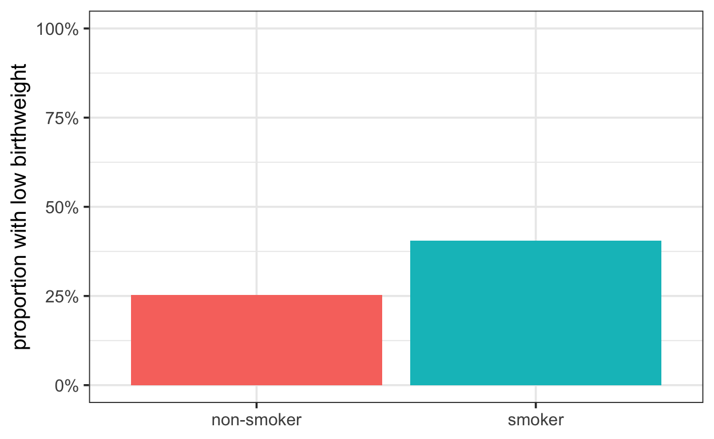
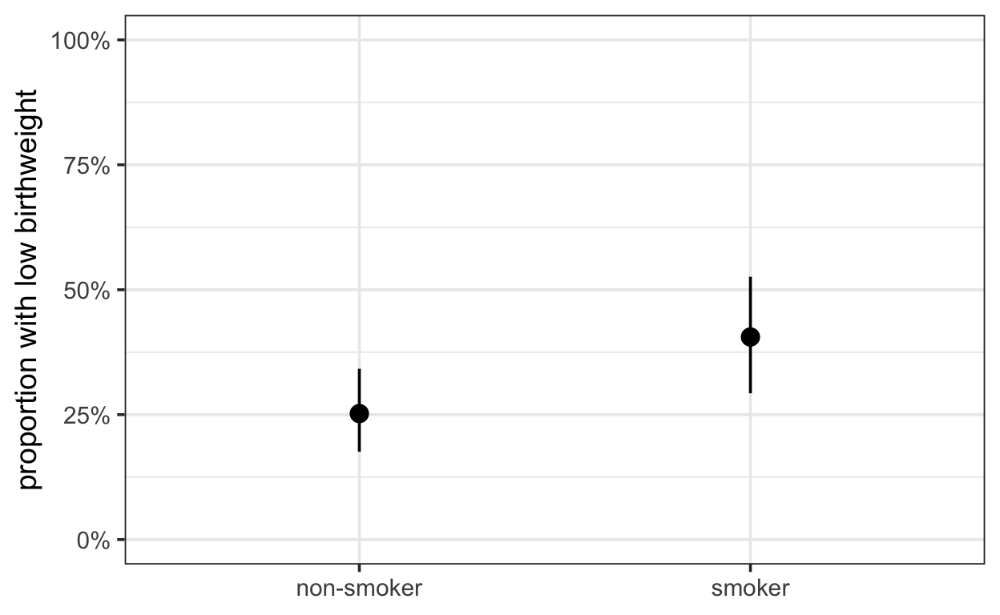

Epidemiology, Biostatistics and
Prevention Institute
Epidemiology, Biostatistics and
Prevention Institute
About this tutorial
This tutorial outlines some key statistical methods needed to analyze randomized controlled trials (RCTs), as conducted in our hands-on RCT courses:
- B102 (“Konzepte und Methoden der Epidemiologie”) in the Master of Public Health program,
- BME361 (“Randomised trials – From lab experiments to large preventive trials”) in the MSc program in Biomedicine, and
- EPI301 (“Introduction to Epidemiology”) in the PhD programs in Epidemiology and Biostatistics; Clinical Science; and Care & Rehabilitation Science.
There are many potential study designs (e.g. two-arm parallel group, more than 2 parallel groups, crossover trials, cluster-randomized, case-control, …) and types of outcomes (e.g. continuous normally-distributed, continuous but not normal, binary, ordinal, categorical, survival). We focus on performing the following key steps in analyzing a medical study:
- summarizing binary and continuous outcomes
- comparing these outcomes in a two-sample setting.
Along the way, we’ll cover p-values and confidence intervals. We do not aim to provide a comprehensive overview to statistical methodology, but to get you started with some methods that are applicable in many common situations.
This tutorial is a work in progress! Please contact me at sarah.haile@uzh.ch if you have an comments or questions.
Radtke T, von Wyl V, Haile SR, Rohrmann S, Frei A, Puhan MA. Evidence-based coaching of core competencies in epidemiology, using the framework of randomized controlled trials: the Zurich approach. Int J Epidemiol. 2024 Apr 11;53(3):dyae075. doi: 10.1093/ije/dyae075.
Summarizing continuous outcomes
To discuss statistical methods for continuous outcomes, we use data from the didgeridoo study. In this RCT, participants with obstructive sleep apnea were randomized either to didgeridoo lessons with daily practice or to a waiting list for such lessons (control arm).
Puhan MA, Suarez A, Lo Cascio C, Zahn A, Heitz M, Braendli O. Didgeridoo playing as alternative treatment for obstructive sleep apnoea syndrome: randomised controlled trial. BMJ. 2006 Feb 4;332(7536):266-70. doi: 10.1136/bmj.38705.470590.55.
The primary endpoint is the Epworth Sleepiness Scale (ESS), a measure
of daytime sleepiness on a scale from 0 (not sleepy in any situation) to
24 (very likely to fall asleep in all situations). We have data on this
outcome at basline (epworth1) and at 4 months
(epworth2).
head(didgeridoo)A graph of ESS at 4 months by treatment could look something like this:
ggplot(aes(trt, epworth2,
color = trt), data = didgeridoo) +
ggbeeswarm::geom_beeswarm() +
geom_boxplot(fill = NA, outliers = FALSE) +
guides(color = "none") +
ylim(0, 24) +
xlab(NULL) + ylab("Epworth sleepiness scale at 4 months")
It looks like the didgeridoo group has somewhat lower ESS, on
average, than the control group. The next step is to quantify how much
lower. A quick way is just to use group_by() and
summarize().
didgeridoo |>
group_by(trt) |>
summarize(m = mean(epworth2))Using tbl_summary() extends nicely to more than 1
endpoint:
didgeridoo |>
select(trt, epworth2) |>
tbl_summary(by = trt,
statistic = list("epworth2" = "{mean} ({sd})"))| Characteristic | control N = 111 |
didgeridoo N = 141 |
|---|---|---|
| epworth2 | 9.6 (6.0) | 7.4 (2.3) |
| 1 Mean (SD) | ||
Either way, we get the same results: average / mean ESS in the didgeridoo group is 7.4 compared to 9.6 in the control group. The difference between the two groups is therefore -2.2, that is, participants taking didgeridoo lessons had on average a 2.2 point lower ESS than those not taking lessons.
7.4 - 9.6## [1] -2.2Clinical / practical relevance or statistical significant?
We have just compared ESS in the didgeridoo study as the average difference between the two groups. Such a comparison is often called an effect size or treatment effect. It quantifies the association between the treatment and outcome, and describes clinical or practical relevance.
Now, if we conducted the didgeridoo study again, even in the same study center and with the same didgeridoo instructor, we would not get exactly the same result, would we? Perhaps it would be close, but it’s unlikely to be exactly the same. We might like to guess what other possible treatment effects would be plausible. For that, we need a confidence interval (CI), which describes a range of most plausible treatment effects given our observed data, describing clinical or practical relevance. If a treatment effect corresponding to no difference (e.g. mean difference of 0) is included in the range of the CI, we generally say that the study results are consistent with no difference between the treatment arms.
A CI usually has some percent value attached to it, most often we see a 95% confidence interval. What does that mean? To really understand CIs, we need to imagine that we conducted our study many many times. A 95% CI means that if we conducted our study 100 times, 95 of the confidence intervals from those studies would contain the population-level treatment effect. But for any one study, we do not know whether the true treatment effect is outside the CI, at the lower end, in the middle or in the upper end. Nevertheless, because we are working with 95% CIs, we think the true effect is likely to be somewhere in the CI for our study.

And finally, we have p-values, a measure of statistical significance. Now imagine we have an intervention which does not affect the endpoint compared to the control arm.
If the difference is small, and we think that most studies would give us results at least this size or larger (assuming no difference between intervention and control), we say that the results are “not suprising”, and conclude no difference.
If the difference is larger, and we think that few studies would give us results at least this size or larger (assuming no difference between intervention and control), we say that the results are “suprising”, and conclude there is a difference between the treatment arms.
P-values quantify how surprised we would be by the results, if we assume that there is no difference between intervention and control.
In regulatory settings, we usually say our level of surprise should be no more than 5% (“significance level”):
- If \(p<0.05\), that is, if the observed results would be expected no more than 5% of the time when there is actually no difference between intervention and control, then we say the results are *statistically significant”.
- If \(p\geq0.05\), that is, if the observed results would be expected more than 5% of the time when there is actually no difference between intervention and control, then we say the results are *not statistically significant”.
Power and sample size considerations are generally based on this simple decision rule. In other situations, we do not need clear predefined rules for when the study results are considered “positive”. Then it may be more helpful to consider p-values as measures of evidence.
 Regardless of how we interpret p-values, they are measures of
statistical significance only, and make no statement about the clinical
relevance of the observed results. In very small studies, p-values will
be mostly not significant, even if the results are practically
meaningful. On the other hand, in very large studies, p-values will
generally be significant, even if the observed effects are very
small.
Regardless of how we interpret p-values, they are measures of
statistical significance only, and make no statement about the clinical
relevance of the observed results. In very small studies, p-values will
be mostly not significant, even if the results are practically
meaningful. On the other hand, in very large studies, p-values will
generally be significant, even if the observed effects are very
small.
Greenland S, Senn SJ, Rothman KJ, Carlin JB, Poole C, Goodman SN, Altman DG. Statistical tests, P values, confidence intervals, and power: a guide to misinterpretations. Eur J Epidemiol. 2016 Apr;31(4):337-50. doi: 10.1007/s10654-016-0149-3.
Muff S, Nilsen EB, O’Hara RB, Nater CR. Rewriting results sections in the language of evidence. Trends Ecol Evol. 2022 Mar;37(3):203-210. doi: 10.1016/j.tree.2021.10.009.
Comparing continuous outcomes
Now we want to test for difference in ESS between the two arms in the
didgeridoo study. One option for that is a two-sample t-test. (You may
have learned in a statistics class that there are several
versions of the t-test, depending on whether the variances and / or
sample sizes are similar. As it is not recommended to test for equal
variances first (Zimmermann 2004),
t.test() conducts the most general version, “Welch”, of the
t-test by default (i.e., without the equal variance assumption, using
the option var.equal = FALSE).
t.test(.. ~ .., data = didgeridoo)t.test(epworth2 ~ trt, data = didgeridoo)Previously, we had a treatment difference of
7.4 - 9.6 = -2.2. Now we also get a 95% confidence interval
from -1.89 to 6.45, and p = 0.26. Both indicate no difference between
intervention and control.
But wait, shouldn’t the treatment effect be inside the confidence interval. Do you see why that is not here?
In R, as in Stata and other statistical programming languages, the
t.test results compare the 2nd group to the 1st group, or
in this case, control - didgeridoo. This is the opposite of
what we calculated above didgeridoo - control, and makes
the t.test output somewhat difficult to follow.
# mean difference from t.test()
9.636 - 7.357## [1] 2.279We could also use linear regression, lm(), to get the
same results, and then tbl_regression() to show the
coefficient table with confidence intervals.
lm(.. ~ .., data = didgeridoo)mod <- lm(epworth2 ~ trt, data = didgeridoo)
tbl_regression(mod, conf.int = TRUE)The results from linear regression may not be exactly the same as those from the t-test, but they are quite similar. Additionally, linear regression allows us to further adjust for other participant characteristics, e.g. baseline ESS.
mod <- lm(epworth2 ~ trt + epworth1, data = didgeridoo)
tbl_regression(mod, conf.int = TRUE)After adjustment for baseline ESS, the observed treatment effect is -2.7 (95% CI -5.1 to -0.35, p = 0.027), showing a modest and statistically significant effect of didgeridoo playing on sleep apnea. These are essentially the results that Puhan 2006 reported, though they examined change scores.
##
## Welch Two Sample t-test
##
## data: (epworth2 - epworth1) by trt
## t = 2.3731, df = 22.782, p-value = 0.02646
## alternative hypothesis: true difference in means between group control and group didgeridoo is not equal to 0
## 95 percent confidence interval:
## 0.3802133 5.5678387
## sample estimates:
## mean in group control mean in group didgeridoo
## -1.454545 -4.428571Zimmerman, D W 2004 A note on preliminary tests of equality of variances. British Journal of Mathematical and Statistical Psychology, 57(1): 173–181. DOI:10.1348/000711004849222
Binary outcomes: the birthweight data
Now that we’ve looked at some typical methods for continuous outcomes, we switch to binary outcomes. These outcome generally answer some yes/no kind of question:
- Did the participant finish the test?
- Did the participant have a heart attack?
In this dataset, we want to examine whether babies of mothers who smoke were more likely to be of low birth weight, than of mothers who did not smoke.
First, we summarize the proportion of low birthweight babies by mothers’ smoking status.
birthweight |>
select(low, smoke) |>
tbl_summary(by = smoke,
digits = list("low" ~ 1))| Characteristic | non-smoker N = 1151 |
smoker N = 741 |
|---|---|---|
| low | 29.0 (25.2%) | 30.0 (40.5%) |
| 1 n (%) | ||
Among the 74 smoking mothers, 41% (n = 30) babies were of low birthweight, compared to 25% (n = 115) from 115 non-smoking mothers.
A graphical summary
A simple graph for binary outcomes might look like this.
tmp <- birthweight |>
group_by(smoke) |>
summarize(n = n(),
lowbw = sum(low),
pct = lowbw / n)
tmpggplot(aes(smoke, pct, fill = smoke), data = tmp) +
geom_col() +
scale_y_continuous(limits = 0:1,
labels = scales::percent) +
guides(fill = "none") +
xlab(NULL) + ylab("proportion with low birthweight")
As an alternative that also accounts for variation and sample size, this version with confidence intervals is also nice.
library(purrr)
tmp <- birthweight |>
group_by(smoke) |>
summarize(n = n(),
lowbw = sum(low),
pct = lowbw / n) |>
mutate(bt = map2(lowbw, n, ~ binom.test(.x, .y)),
lb = map_dbl(bt, ~ .$conf.int[1]),
ub = map_dbl(bt, ~ .$conf.int[2]))
tmpggplot(aes(smoke, pct,
ymin = lb, ymax = ub), data = tmp) +
geom_pointrange() +
scale_y_continuous(limits = 0:1,
labels = scales::percent) +
xlab(NULL) + ylab("proportion with low birthweight")
Summarizing binary outcomes
For binary outcomes, we have a few options.
risk difference
The risk difference is calculated as
outcome proportion in the intervention group minus
outcome proportion in the control group.
0.405 - 0.252## [1] 0.153risk difference: Smoking mothers are 15% more likely to have a low birthweight baby than non-smoking mothers.
risk ratio
The risk ratio is calculated as
outcome proportion in the intervention group divided by
outcome proportion in the control group.
0.405 / 0.252## [1] 1.607143risk ratio: Smoking mothers are 1.6 times more likely to have a low birthweight baby than non-smoking mothers.
odds ratio
Finally, the odds ratio is calculated as
outcome odds in the intervention group divided by
outcome odds in the control group. But what is odds? Odds
compare the probability that an event will happen to the probability
that it will not happen. If the probability of an event is 75%, we say
the odds of that event are 75%/25%, equal to “3 to 1” or just 3. For
some other probabilities we get:
A probability of 40% (as we have for low birthweight babies of smoking mothers) indicates odds of 0.667. Similarly, a probability of 25% (for low birthweight babies of non-smoking mothers) corresponds to odds of 0.333. The odds ratio is therefore about 2.
## [1] 2odds ratio: Smoking mothers gave 2 times the odds to have a low birthweight baby than non-smoking mothers.
Calculating the odds ratio
You may have noticed we weren’t very precise about calculating the odds ratio just now. In this section, we’ll show some basic calculations to get the correct odds ratio. The simplest way to summarize these kind of yes/no outcomes by group is the so-called 2x2 table.
|
smoke
|
Total | ||
|---|---|---|---|
| non-smoker | smoker | ||
| low | |||
| 0 | 86 | 44 | 130 |
| 1 | 29 | 30 | 59 |
| Total | 115 | 74 | 189 |
For non-smokers, we see that the 29/115 = 0.252 of
non-smoking mothers had low birthweight babies, compared to
30/74 = 0.405 of smoking mothers. To get odds, we
calculate
29 / 86## [1] 0.3372093for non-smoking mothers, and
30 / 44## [1] 0.6818182for smoking mothers. We do not need the column totals to calculate odds!
To get the odds ratio, we then calculate:
## [1] 2.021944That’s a lot of division signs! But perhaps you remember from school that instead of dividing by the 2nd fraction, we can multiply by its reciprocal.
\[ \frac{30}{44} \Big/ \frac{29}{86} =
\frac{30}{44} \times \frac{86}{29} = \frac{86 \cdot 30}{29 \cdot 44} =
2.02\] To remember this way of getting the odds ratio, you
multiply the number on the diagonal, 86 * 30, and then
divide by the off diagonal, 44 * 29.
Bland JM, Altman DG. Statistics notes. The odds ratio. BMJ. 2000 May 27;320(7247):1468. doi: 10.1136/bmj.320.7247.1468.
Comparing binary outcomes
To compare these rates with a hypothesis test, we could use a
chi-square test, chisq.test(). In order to run this test in
R, we first need to set up the 2x2 table. Additionally, since
chisq.test() only reports a p-value, we need to find
another way to get the odds ratio, which we can do with the
epitools package.
library(epitools)
tab <- with(birthweight, table(low, smoke))
tab## smoke
## low non-smoker smoker
## 0 86 44
## 1 29 30chisq.test(tab)##
## Pearson's Chi-squared test with Yates' continuity correction
##
## data: tab
## X-squared = 4.2359, df = 1, p-value = 0.03958oddsratio(tab)## $data
## smoke
## low non-smoker smoker Total
## 0 86 44 130
## 1 29 30 59
## Total 115 74 189
##
## $measure
## odds ratio with 95% C.I.
## low estimate lower upper
## 0 1.00000 NA NA
## 1 2.01268 1.073703 3.794579
##
## $p.value
## two-sided
## low midp.exact fisher.exact chi.square
## 0 NA NA NA
## 1 0.02914865 0.0361765 0.02649064
##
## $correction
## [1] FALSE
##
## attr(,"method")
## [1] "median-unbiased estimate & mid-p exact CI"There are small differences between the output of
chisq.test() and oddsratio() here, but that’s
because one uses a “continuity correction” by default and the other does
not.
oddsratio(tab, correction = TRUE)## $data
## smoke
## low non-smoker smoker Total
## 0 86 44 130
## 1 29 30 59
## Total 115 74 189
##
## $measure
## odds ratio with 95% C.I.
## low estimate lower upper
## 0 1.00000 NA NA
## 1 2.01268 1.073703 3.794579
##
## $p.value
## two-sided
## low midp.exact fisher.exact chi.square
## 0 NA NA NA
## 1 0.02914865 0.0361765 0.03957697
##
## $correction
## [1] TRUE
##
## attr(,"method")
## [1] "median-unbiased estimate & mid-p exact CI"This approach is admittedly a bit tedious. We could also use logistic
regression, which can be done with the glm() function, and
the option family = binomial. Also, when we look at the
regression coefficients, we need to exponentiate them, \(e^{\widehat{\beta}}\), to get odds
ratios.
mod <- glm(low ~ smoke, data = birthweight, family = binomial)
tbl_regression(mod, conf.int = TRUE, exponentiate = TRUE)| Characteristic | OR | 95% CI | p-value |
|---|---|---|---|
| smoke | |||
| non-smoker | — | — | |
| smoker | 2.02 | 1.08, 3.80 | 0.028 |
| Abbreviations: CI = Confidence Interval, OR = Odds Ratio | |||
Logistic regression also allows us to adjust for other factors, like mother’s age or race.
mod <- glm(low ~ smoke + age + race, data = birthweight, family = binomial)
tbl_regression(mod, conf.int = TRUE, exponentiate = TRUE)| Characteristic | OR | 95% CI | p-value |
|---|---|---|---|
| smoke | |||
| non-smoker | — | — | |
| smoker | 3.01 | 1.47, 6.38 | 0.003 |
| age | 0.97 | 0.90, 1.03 | 0.3 |
| race | |||
| white | — | — | |
| black | 2.75 | 1.04, 7.31 | 0.040 |
| other | 2.88 | 1.32, 6.53 | 0.009 |
| Abbreviations: CI = Confidence Interval, OR = Odds Ratio | |||
Choice of statistical test
If you’ve been in a statistical methods course, you may remember that there were many methods presented. How do we know which one to pick?
For a relatively simple randomized clinical trial with
- 2 treatment arms
- Participants are independent
- Primary endpoint at 1 timepoint, either (approximately) continuous or binary
we have the following options:
| type of outcome | effect estimate | not adjusted | adjusted |
|---|---|---|---|
| continuous * | mean difference | \(t\)-test | linear regression |
| binary (yes / no) | odds ratio | \(\chi\)-square test | logistic regression |
| … | … | … | … |
Selection of statistical methods is however usually more complicated than this! A competent statistician can help you determine the most appropriate methods for your study.